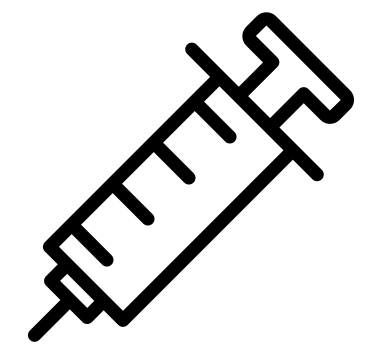

| VIRUS DEL PAPILOMA HUMANO (VPH) ( VNC20) |
| nº DE DOSIS DE VACUNA vph |
Situación y edad |
1 dosis
|
Vacunación sistemática a los 12 años |
| VAcunación de rescate en mujeres, hasta los 25 años |
| Vacunación de rescate en hombre, hasta los 18 años(inclusive) Nacidos a partir del 1 de Enero del 2007 |
| Hombres que tienen sexo con hombre (HSH), hasta los 25 años. Situación de prostitución (hombres y mujeres), hasta los 25 años |
| Varones menores de 25 años (No está financiado) |
| 2 dosis |
Vacunación de rescate en mujeres a partir de los 26 años (nacidas a partir de 1994) |
Hombres que tienen sexo con hombres (HSH) de 26 a 45 años.
Situación de prostitución (hombres y mujeres) de 26 a 45 años |
|
3 dosis
(0-2-6 meses) |
Personas con inmunosupresión pertenecientes a los siguientes grupos de riesgo, hasta los 45 años inclusive
- Sindrome WHIM
- Infección por VIH
- TOS y TPH
|
| Mujeres con cualquier tratamiento por CIN2+, a cualquier edad |